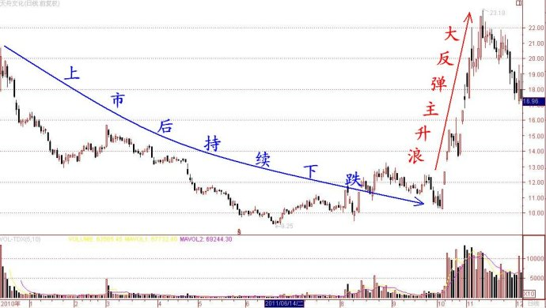
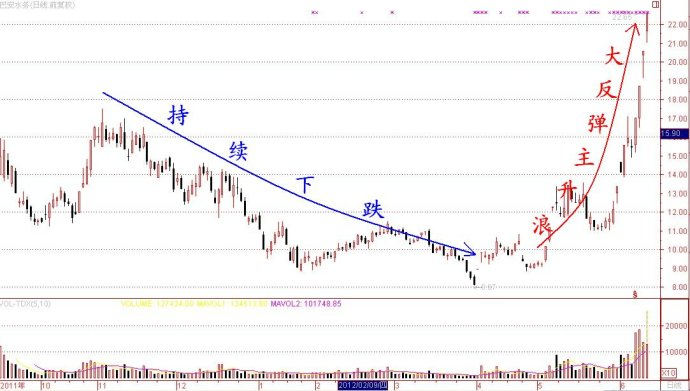

第188篇•教你炒股系列49:主升浪的成因（7）
谷为陵
在个股并没有明显利好的情况下，也会出现主升浪，这类主升浪的产生主要是因为资金推动。资金推动型主升浪有两种情况：一是控盘型和半控盘型庄股的主升浪，二是超跌股的大反弹主升浪。我在前面已经阐述了控盘型庄股的主升浪，现在我就来谈谈超跌股的大反弹主升浪。
从历史上看，超跌股，特别是超跌低价股的大反弹主升浪的形成，与股市的走势有一定的关系。在绝大多数情况下，超跌低价股的大反弹主升浪与股市的走势有同向的关系，即，当股市在一轮大跌后出现大反弹时，超跌低价股也往往容易出现大反弹。
这种情况我们见得很多了。比如，在1994年8月三大“政策救市”时，随着股市暴涨，几乎所有的超跌低价股都出现了暴涨。再如，在2009年初，随着股市的反弹，超跌低价股太行水泥、中路股份，以及超跌次新股水晶光电、东方雨虹、川润股份等都出现了暴涨行情，股价在不到一个月时间里都翻了两倍。超跌低价股在大反弹时，可以与基本面的朦胧利好挂钩，如太行水泥、中路股份；也可以与基本面没有太大的关系，如水晶光电、东方雨虹、川润股份。
当然，也有在股市处于振荡，或者只是小反弹行情时，超跌低价股也会出现大反弹主升浪的情况。这种情况主要发生在超跌低价次新股中。我在后面还要举几个案例。
从总体上看，超跌低价股的反弹力度主要还是要看股价的投机性，投机性越强的股票，反弹的速度越快，力度越大。
那么，什么是股票的投机性呢？我认为，若从价格变化的角度论，股票的投机性是股价潜在的波动率的量度——股价潜在波动率越大的股票，投机性越强，股价潜在波动率越小的股票，投机性越差。而股价的波动率或者说投机性又与股价高低、盘子大小、是否超跌、是否被炒作过等因素相关，若按照这些因素对投机性影响的能力，则存在以下的几种排序情况：
低价股>高价股
超跌股>涨幅大股
小市值股>大市值股
长期没被炒过的股>短期被炒过的股
将以上几种单独的投机性排序进行综合，就很容易推出这样的结论：小盘低价超跌股的投机性强，而小盘低价超跌次新股的投机性最强。因此，小盘低价超跌次新股往往是大反弹的主流品种，也是抄反弹的主要目标。小盘低价超跌次新股的大反弹主升浪，我们在这两年的股市里也见到不少的案例。如，去年的天舟文化，和近期的巴安水务、东宝生物等都应该属于此类。
案例一：天舟文化。该股自2010年12月15日上市后就一路下跌，从最高点的20.7元（前复权）一直跌到2011年6月最低点的9.25元，跌幅高达55%。从这段走势来看，该股应该是非常弱势的。但自去年10月开始，因国家倡导文化产业，该股却立马爆发了一轮大主升浪。由于文化传媒这个题材对于该股到底有何实质性的利好，根本无法界定，所以，从本质上看，该股的那轮主升浪应该定性为朦胧利好催生的超跌反弹型主升浪。以下该股自上市后至去年底的日K线图：

案例二：巴安水务。该股与天舟文化类似，自2010年9月16日上市后，虽被短暂炒过几天，但其后股价就一路下跌，从最高点的17.5元（前复权）一直跌到今年3月30日的最低点8.07元，跌幅高达54%。从这段走势来看，该股也应该是非常弱势的。但自今年5月开始，因媒体报道中国自来水大部分不达标，需要大规模更新管网设备，该股就开始爆发了，经过两轮的大涨，该股股价几乎翻了两倍，成为了近期最大的黑马。
若从题材上分析，该股本不应该走出这样大的主升浪。这是因为，自来水管网设备更新，属于政府招标采购范畴，且有很强的行政指导和地域限制，巴安水务能够“揽到多少活”是一个未知数，只能够算是一个朦胧利好，与去年的天舟文化和今年的浙江东日类似。所以，从本质上看，该股的这轮主升浪也应该定性为在朦胧利好下催生的超跌反弹型主升浪。以下该股自上市后的日K线图： 
所以，现在游资的一个操作模式，就是选择那些超跌低价股，特别是超跌低价次新股，在有关政策性或者行业性的朦胧利好掩护下，快速发动一轮资金推动型的大反弹主升浪。
特别应该注意的是，若游资所选的超跌低价次新股含有高送股题材，那么，通过抢权和填权行情，主升浪的涨幅就会很大。比如，今年的大黑马东宝生物、巴安水务都属于这样的情况。
这也给我们提示了这样的一个选股的思路，那就是在每年的年报和半年报时，将那些有高送股的超跌低价次新股全部选出来，一旦发现其中的某些股票拥有政策性或者行业性的利好，且股价也有强势启动的迹象，那么，这些股票就极有可能会走出一轮超跌反弹主升浪，及时介入也许可获短期暴利。